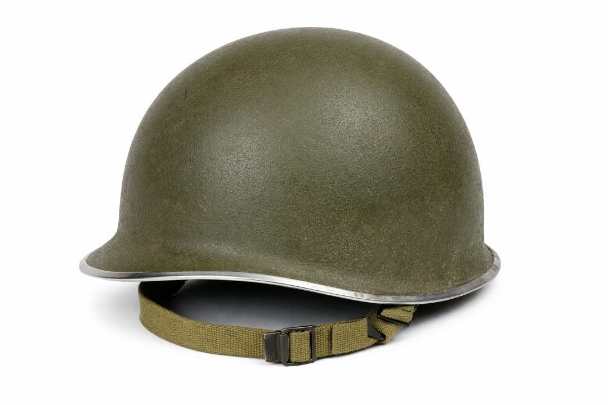

Guide Casque US - Reconnaitre un vrai d’un faux
<
1. Les bases du casque M1
Le casque US M1 est composé de deux parties :
• La coque en acier
• Le liner (coque intérieure)
Chaque élément possède des caractéristiques précises permettant d’identifier un modèle authentique.
2. Les soudures frontales
Les casques authentiques fabriqués avant 1944 possèdent une soudure frontale visible.
Après 1944, la soudure passe à l’arrière.
3. Les attaches de jugulaire
Les attaches fixes (fixed bales) indiquent une fabrication précoce.
Les attaches mobiles (swivel bales) apparaissent plus tard.
4. Les marquages
Le numéro de lot frappé dans l’acier permet de dater précisément la production.